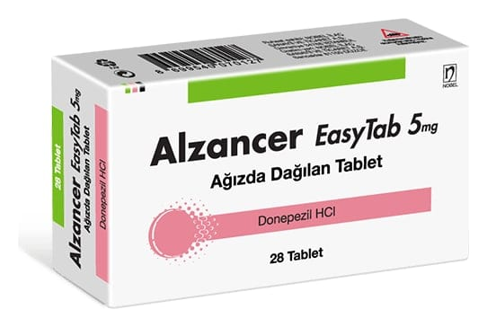

Alzancer Easytab 5 mg 28 Ağızda Dağılan Tablet

Ne için kullanılır
KT · Bölüm 1ALZANCER EASYTAB, beyaz renkli, yuvarlak, bir yüzünde ALZ yazılı, diğer yüzünde 5 yazılı tabletlerdir. Her bir tablet 5 mg donepezil hidroklorür içerir ve 28 ağızda dağılan tabletlik ambalajlarda sunulmuştur.
ALZANCER EASYTAB, hafif ve orta şiddetli Alzheimer tipi bunama belirtilerinin tedavisinde kullanılır ve etkin maddesi donepezil hidroklorür, asetilkolinesteraz inhibitörleri olarak anılan bir ilaç sınıfına aittir.